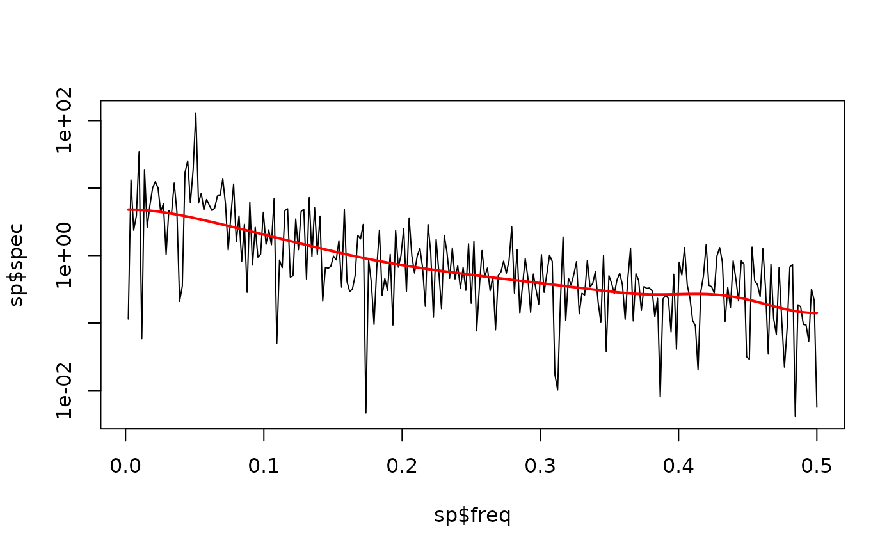

Estimates the background of a power spectrum with the Smoothed Window Average (SWA) method of Kemp (2016), as refined by Weedon (2020, 2022). The log10 power spectrum is averaged in non-overlapping windows of odd width (11 to 99 ordinates, always keeping at least three complete windows). The window averages are linearly interpolated, with two alternative extrapolations towards zero frequency. Among all candidate widths/extrapolations the fit with the fewest non-decreasing fitted steps (and, in case of a tie, the smallest RMSE) is selected. A constant (white-noise) and a quadratic high-frequency tail are then tested, and finally the fit is repeatedly Hanning smoothed as long as the RMSE degrades by less than 1%. Translated from Acycle v3.1 specswa.m (Mingsong Li, after the FORTRAN code of Graham Weedon).
Arguments
- freq
Frequencies of the power spectrum (required): numeric vector, finite, strictly increasing, with at least 33 values (three initial windows of 11 ordinates), in cycles per depth/time unit.
Default=NULL.- log_power
log10 power belonging to
freq(required): numeric vector of the same length asfreq.Default=NULL.- n_data
Number of data points of the analysed series (required, a positive integer). Retained for compatibility with Acycle and returned in the result; it does not influence the fitted background.
Default=NULL.- verbose
Print fit diagnostics (logical, TRUE or FALSE).
Default=FALSE.
Value
A list with elements
swa (SWA background in linear power units, same length as
freq), n_windows (selected window width in ordinates;
second output of specswa.m) and diagnostics (list with
initial_variant, initial_nondecreasing_count,
initial_rmse, selected_window, tail_model
("extrapolated", "constant" or "quadratic"), n_smoothing,
final_rmse, n_data, n_frequency).
References
Kemp, D.B., 2016. Optimizing significance testing of astronomical forcing in cyclostratigraphy. Paleoceanography 31, 1516-1531.
Weedon, G.P., 2020. Spectral background estimation for cyclostratigraphy (SWA). In: Weedon, G.P. 2022, Problems with the current practice of spectral analysis in cyclostratigraphy: Avoiding false detection of regular cyclicity. Earth-Science Reviews 235, 104261.
Author
Michiel Arts (R translation); original MATLAB code: Mingsong Li, after the SWA FORTRAN program of Graham Weedon.
Examples
# \donttest{
set.seed(1)
n <- 512
x <- stats::filter(stats::rnorm(n), 0.7, method = "recursive")
x <- as.numeric(x) + sin(2 * pi * (1:n) / 20)
sp <- stats::spec.pgram(x, taper = 0, detrend = FALSE, plot = FALSE)
bg <- swa_background(freq = sp$freq, log_power = log10(sp$spec),
n_data = n)
plot(sp$freq, sp$spec, type = "l", log = "y")
lines(sp$freq, bg$swa, col = "red", lwd = 2)

# }